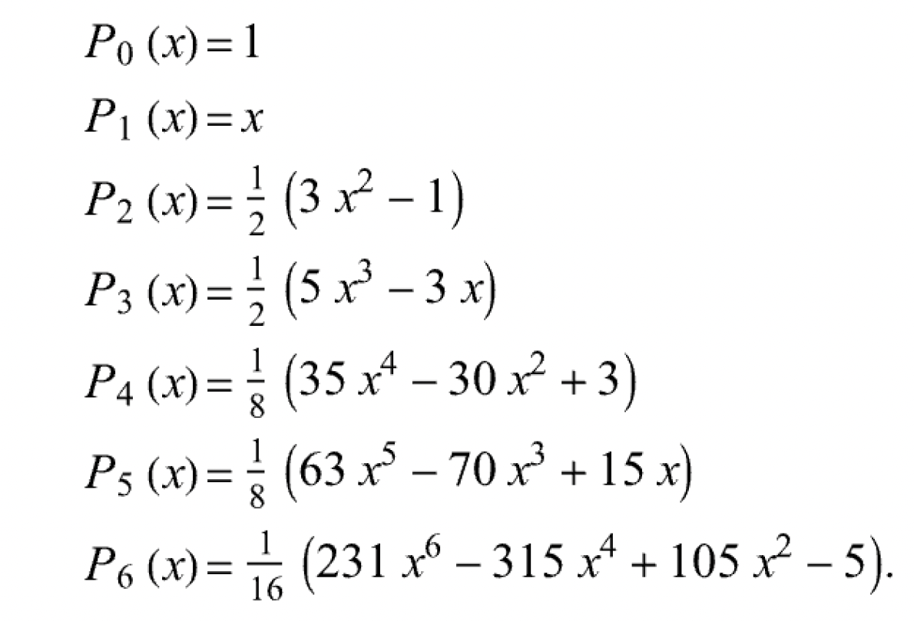
Bayesian data analysis
Overview
Today, we cover:
- Revisiting Gaussian Quadrature
- Bayesian data analysis crash course
- Motivation for MCMC
Tomorrow:
- MCMC
Gaussian quadrature
Gaussian quadrature allows subintervals to be more freely chosen.
- Weights and subintervals are node-specific
- Provides the exact solution if \(f\) is a polynomial with degree at most \(2n-1\)
\[\int_a^b \omega(x)f(x)dx \approx \sum_{j = 1}^n w_j f(x_j)\]
\(\omega(x)\) is some weight function
\(w_j, j = 1,\ldots,n:\) are specific weights; \(x_j\) are nodes
If \(f\) can be approximated well by a degree \(2n-1\) polynomial on \([a,b]\), then Gaussian quadrature provides a good approximation to the integral of interest.
This means it is great for approximating smooth functions
Gaussian quadrature
Question: How to choose the weights and placement of the nodes?
Gauss-Legendre quadrature: \(\int_{-1}^1 f(x)dx\)
Gauss-Chebyshev: \(\int_{-1}^1 \frac{1}{\sqrt{1-x^2}}f(x)dx\)
Gauss-Laguerre: \(\int_0^{\infty}e^{-x}f(x)dx\)
Gauss-Hermite: \(\int_{-\infty}^{\infty}e^{-x^2}f(x)dx\)
Two-point Gauss-Legendre example
Two-point Gauss-Legendre example
General Gauss-Legendre
The weights for Gauss-Legendre quadrature are given by:
\[w_i = \frac{2}{(1-x_i^2)[P'_n(x_i)]^2}\]
Where the first few Legendre polynomials are:
Gauss-Legendre nodes and weights
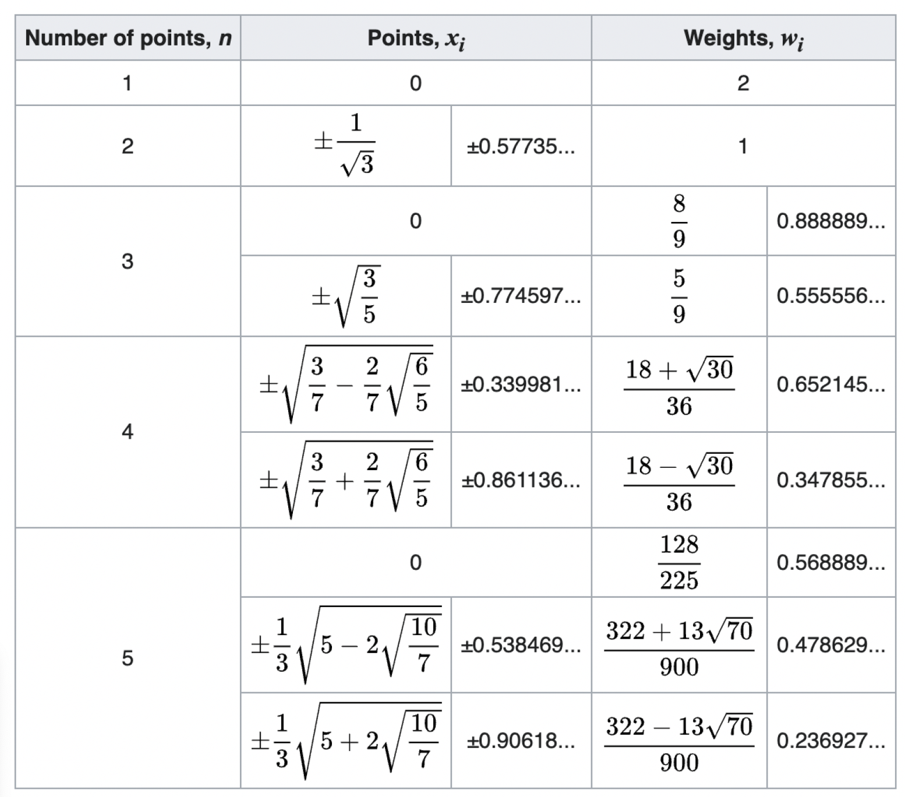
Orthogonal polynomial basis functions come from applying Gram-Schmidt orthogonalization on [-1,1] to monomials 1,x,x2.x3 - orthogonal polynomial means each basis function supplies different information
Bayesisan data analysis: a simple motivating example
Imagine we are interested in the daily number of steps taken by Rollins students. We use accelerometers to collect a random sample of step counts from \(n = 10\) students.
- Let \(y_i\) represent the step count for the \(i\)th student
- Assume \(y_i \sim N(\mu, \sigma^2_y)\)
We want to learn about \(\mu\), the average daily number of steps taken by Rollins students.
The frequentist approach
We want to learn about \(\mu\), the average daily number of steps taken by Rollins students.
- Parameter \(\mu\) is fixed and unknown
- The data \(y\) is random
- The sample mean \(\hat{\mu} = \bar{y}\) is a statistic, and a frequentist estimator of the population mean \(\mu\).
- Base inference on p-values and confidence intervals
Frequentist inference about \(\mu\)
head(steps)[1] 9732 9270 10446 10699 10336 10326mean(steps)[1] 9999.2Frequentist inference about \(\mu\)
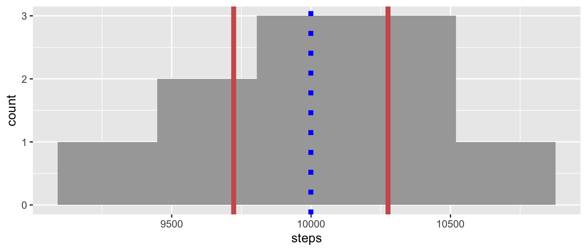
Frequentist inference would say we are 95% confidence that the true number of steps taken by Rollins students lies between 9722 and 10,276 steps.
The Bayesian approach
Bayesians treat the parameter \(\mu\) as random
Express uncertainty about \(\mu\) using probability distributions
The distribution before observing the data is called the prior distribution
- Allows incorporation of previous knowledge
Distribution after observing the data is the posterior distribution
Inference is conditional on the data we observe
The Bayesian approach
What do I think I know?
- \(y_i|\mu \sim N(\mu, \sigma^2_y)\)
- \(\mu \sim N(\mu_0, \sigma^2_{\mu})\)
What do I want to learn?
- \(\mu|y_i \sim \mbox{ ???}\)
This is a one sample Normal-Normal model
What is a one sample Normal-normal model?
The Bayesian approach
Relate prior, likelihood, and posterior through Bayes’ formula:
\[\begin{align} p(\mu \mid y_i) &= \frac{p(y_i \mid \mu)\, p(\mu)}{p(y_i)} \\[3mm] &= \frac{p(y_i \mid \mu)\, p(\mu)}{\int_\mu p(y_i \mid \mu)\, p(\mu)\, d\mu}\\[3mm] &\propto p(y_i \mid \mu)\, p(\mu) \end{align}\]
For the Normal likelihood with a Normal prior for \(\mu\), the posterior is also Normal:
\[\mu|y_i \sim N\left(\frac{\sigma^2_{\mu}}{\sigma^2_y/n+ \sigma^2_{\mu}}\bar{y} + \frac{\sigma^2_y/n}{\sigma^2_y/n+ \sigma^2_{\mu}}\mu_0, \frac{\sigma^2_y\sigma^2_{\mu}/n}{\sigma^2_y/n+ \sigma^2_{\mu}} \right)\]
Worth convincing yourself that the last statement is true - Next year might want to actually go through the math for this
Choosing the prior distribution
A study in Medicine & Science in Sports & Exercise reports that Americans take an average \(4000\) steps per day with a standard deviation of \(200\) steps. We come up with three different priors:
- Informative prior: Maybe we really believe the previous study
- \(\mu \sim N(4000, 200^2)\)
- Weakly informative prior: Or maybe we believe it a little bit
- \(\mu \sim N(4000, 800^2)\)
- Uninformative or diffuse prior: Maybe we don’t have any scientific information at all
- \(\mu \sim N(0, 5000^2)\)
Effect of informative prior
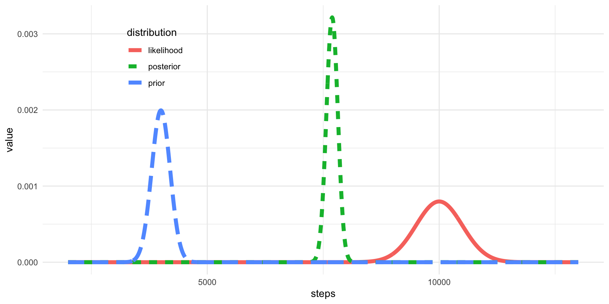
Effect of weakly informative prior
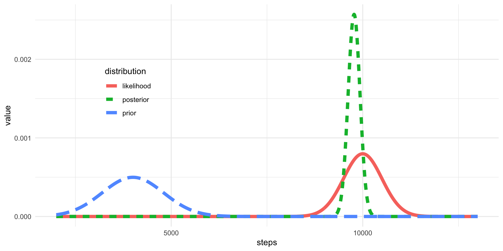
Effect of uninformative prior
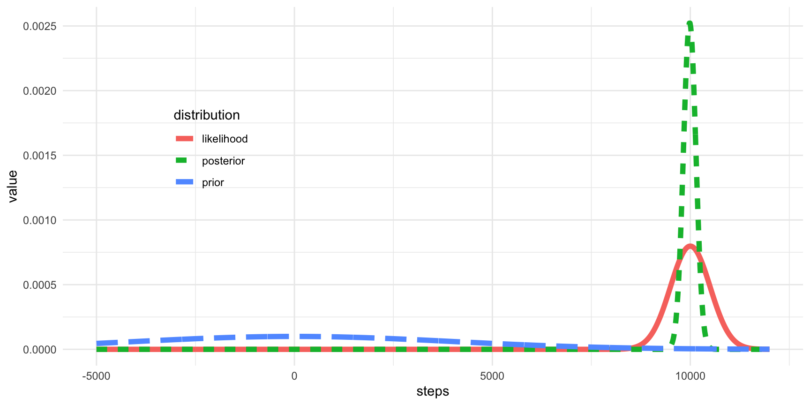
Bayesian inference about \(\mu\)
We decide to go with the uninformative prior.
- Posterior mean: \(\mu|y = 9984\) steps
- Posterior 95% credible interval is the (2.5%, 97.5%) quantile of the posterior distribution
qnorm(c(0.025, 0.927), mu_post, sigma_post)[1] 9673.945 10213.288A Bayesian credible interval for a parameter \(\theta\) is an interval \([a,b]\) s.t.
\[P(\theta \in [a,b]|y) = 1-\alpha\]
- Given the data, there is a 95% probability that the true number of steps for Rollins students lies within \([9673, 10213]\)
Bayesian inference about \(\mu\)
- Posterior probability that \(\mu < 10000\) given \(y\)
pnorm(10000, mu_post, sigma_post)[1] 0.5413359Bayesian inference allows us to make probability statements about \(\mu\) given the data.
Linear regression- frequentist
Frequentist approach: estimate \(\beta\) and \(\sigma^2\)
- \(\hat{\beta} = (X^TX)^{-1}X^Ty\)
- Compute residuals using \(\hat{\beta}\), then from residuals estimate \(\sigma^2\)
As a simple motivating example we are going to do Bayesian linear regression Write out frequentist regression assumptions Induces normal likelihood \(y \sim N(X\beta, \sigma^2I)\)
Steps for a Bayesian linear regression
- Assign priors to the parameters of interest
- Normal prior for \(\beta\)
- Inverse gamma for \(\sigma^2\)
- Choose hyper-parameters
- Prior mean and variance for \(\beta\)
- Shape and scale for \(\sigma^2\)
- Obtain joint posterior distribution, and base inference on this
Bayesian approach is slightly different
Bayesian linear regression (known variance)
We want a Bayesian framework for the regression model
\[y = X\beta + \epsilon; \epsilon \sim N(0, \sigma^2_yI_n)\]
- Need to make distributional assumptions about \(\beta\)
- \(\beta \sim N(0, \sigma^2_bI_p)\)
Here \(p\) includes the intercept
Bayesian regression (known variance)
We want to obtain the posterior
\[p(\beta|y, X) \propto p(y|\beta, X)p(\beta)\]
Bayesian regression (known variance)
\[\beta \mid y \sim \mathcal{N}(\beta_{\text{post}}, \Sigma_{\text{post}})\]
\[\Sigma_{\text{post}} = \left( \frac{1}{\sigma_y^2} X^\top X + \frac{1}{\sigma_\beta^2} I_p \right)^{-1}\]
\[\begin{align} \beta_{\text{post}} &= \Sigma_{\text{post}} \left( \frac{1}{\sigma_y^2} X^\top y + \frac{1}{\sigma_\beta^2} \beta_0 \right)\\[3mm] &= \left( X^\top X + \frac{\sigma_y^2}{\sigma_\beta^2} I_p \right)^{-1} \left( X^\top y \right) \end{align}\]
Closed form solution when variance is assumed known… not usually the case otherwise - when is this going to look like regular linear regression?
About the variances
Throughout all of this we have implicitly conditioned on the variances \(\sigma^2_y\) and \(\sigma^2_{\beta}\)
How do we “choose” the variance terms?
Prior variance
The prior variance \(\sigma^2_{\beta}\) is often pre-selected to indicate the amount of prior knowledge
Typically this is chosen very large to indicate a lack of knowledge
This is considered a hyperparameter
Basically this means that your prior will be dominated by the data and likelihood
As this goes to infinity beta estimates go to OLS
Outcome variance
The outcome variance \(\sigma^2_y\) is a quantity of interest.
- Ideally, we’d like to estimate this using the observed data
- Since we’re already being Bayesians, why not assign a prior distribution and try to find a posterior?
The inverse-gamma distribution works pretty well
\[p(\sigma^2_y |A, B) = \frac{B^A}{\Gamma(A)}(\sigma^2_y)^{-A-1}\exp(-\frac{B}{\sigma^2_y})\]
- Support of \(\sigma^2_y\):
Why do we typically choose inverse Gamma? - Conjugate prior, meaning the posterior will be inverse Gamma (computationlly easier) - Same support as the parameter of interest - Can sometimes be too informative if A, B < 1
Outcome variance posterior
We want to find
\[p(\sigma_y^2|y,X,\beta) \propto p(y|\beta, \sigma^2_y, X)p(\sigma^2_y)\]
It turns out that the posterior outcome variance is also inverse Gamma… this is an example of a conjugate prior.
Some Bayesian language
- Parameters of interest are \(\beta\), \(\sigma^2_y\)
- The priors we’ve used are called conjugate priors
- The hyperparameters we’ve chosen are \(\sigma^2_b, A, B\)
- The distributions we’ve calculated are \(p(\sigma^2_y|y,X, \beta)\) and \(p(\beta|y, X, \sigma^2_y)\)
- These are called full conditionals
- The posterior distribution of interest is \(p(\beta, \sigma^2_y|y, X)\), which is called the joint posterior
Why do we care about full conditionals?
Conjugate priors
A prior is conjugate if the posterior is a member of the same parametric family. Some examples are:
- beta-binomial model: if the response is binomial and we use a beta prior, the posterior is beta
- gamma-Poisson: Poisson reponse + gamma prior = gamma posterior
- normal-normal model: normal response + normal prior = normal posterior
Advantage of a conjugate prior is that the posterior is available in closed form
Mention other advantages of conjugate priors. Which posterior is available in closed form?
Back to the joint posterior distribution
Our goal is to learn about the joint posterior distribution
\[p(\beta, \sigma^2_y|y, X, hyperparameters)\]
We can calculate this from the full conditionals using the law of conditional probability:
\[\begin{align} p(\beta, \sigma^2_y|y, X, h) &= p(\beta| \sigma^2_y,y,X,h)p(\sigma_y^2, X, h)\\[3mm] &= p(\beta| \sigma^2_y,y,X,h)\int_{\beta}p(\sigma^2_y|\beta,y,X,h)d\beta \end{align}\]
Why do we need to learn about the joint posterior distribution? - often people are lazy and just leave out hyperparameters when they write this down. This both bothers me and I’m gonna do it sometimes.
Joint posterior distribution
Our goal is to learn about the joint posterior distribution
\[p(\beta, \sigma^2_y|y, X, hyperparameters)\]
This can be hard!
- Often the joint posterior is analytically intractable
- For the conjugate priors we use, though, the full conditionals were “easy”
- If we can’t write down the joint posterior, maybe we can sample from it
This is the main motivation for MCMC
MCMC
Basic idea: How do I get a string of values from the posterior when I cannot write the posterior down?
- Markov chain Monte Carlo (MCMC) methods let you sample from complicated [posterior] distributions
- a collection of tools used to sample from a target distribution
- Once you have a sample from the posterior distribution you can use summary statistics (mean, variance, quantiles) to do posterior inference
There are lots of MCMC methods-
- We’re going to talk about a couple of the simpler ones.
- Metropolis-Hastings
- Gibbs sampler
Gibbs sampler is a special case of M-H sampler You can think about this analogously to bootstrap in some ways- once you have a sample from a distribution, you can learn about that distribution
Steps for a Bayesian regression
Assign priors to the parameters of interest \(\beta, \sigma^2_y\)
Choose hyper-parameters
- Prior mean and variance for \(\beta\)
- Distributional parameters for \(\sigma^2_y\)
Obtain joint posterior distribution, and base inference on this
We’re going to do this using the cannabis data
Cannabis data
cannabis = readRDS(file = here::here("data", "cannabis.rds"))
cannabis = cannabis %>% select(id, use_group, t_mmr1, t_thc, p_fpc1, p_change = p_PMC_pctChg,
i_memory_time34, i_time_outside_reticle) %>%
mutate(log_mmr = log1p(t_mmr1))
head(cannabis) id use_group t_mmr1 t_thc p_fpc1 p_change i_memory_time34
1 003-001 daily use 0.6108 146.5474 38.987583 -38.4050 3.096037
2 003-003 daily use 0.5093 57.0107 161.109915 -27.0250 3.591851
3 003-004 daily use 1.5778 22.0922 -77.269994 -47.1130 4.523515
4 003-005 daily use 0.6864 81.7211 37.433740 -36.7350 4.338389
5 003-006 daily use 0.4474 14.3114 58.375202 -37.6325 2.802600
6 003-007 daily use 0.5221 9.9674 5.019542 -44.9335 4.706120
i_time_outside_reticle log_mmr
1 70.9271 0.4767309
2 66.1071 0.4116460
3 73.2271 0.9469363
4 59.6271 0.5225961
5 56.2471 0.3697688
6 73.2271 0.4200910Cannabis data
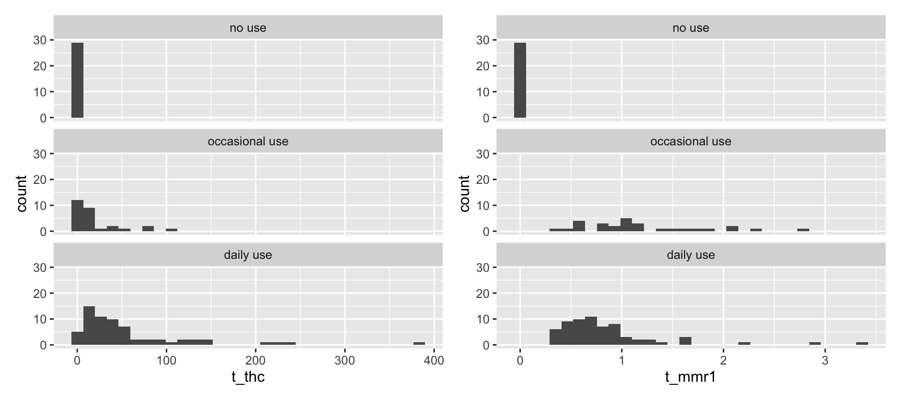
Cannabis data
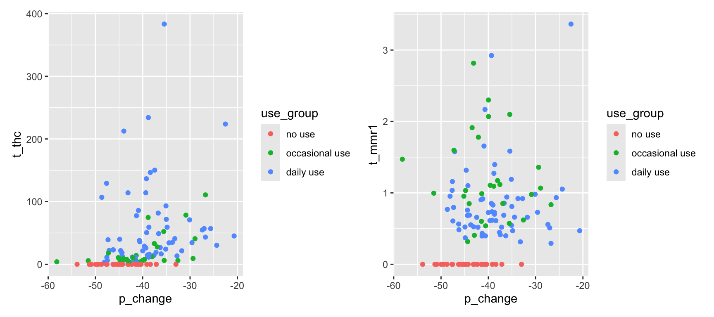
Cannabis data
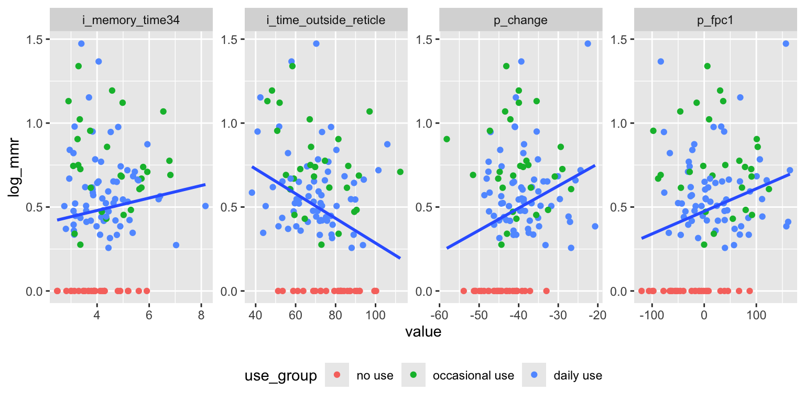
Cannabis data
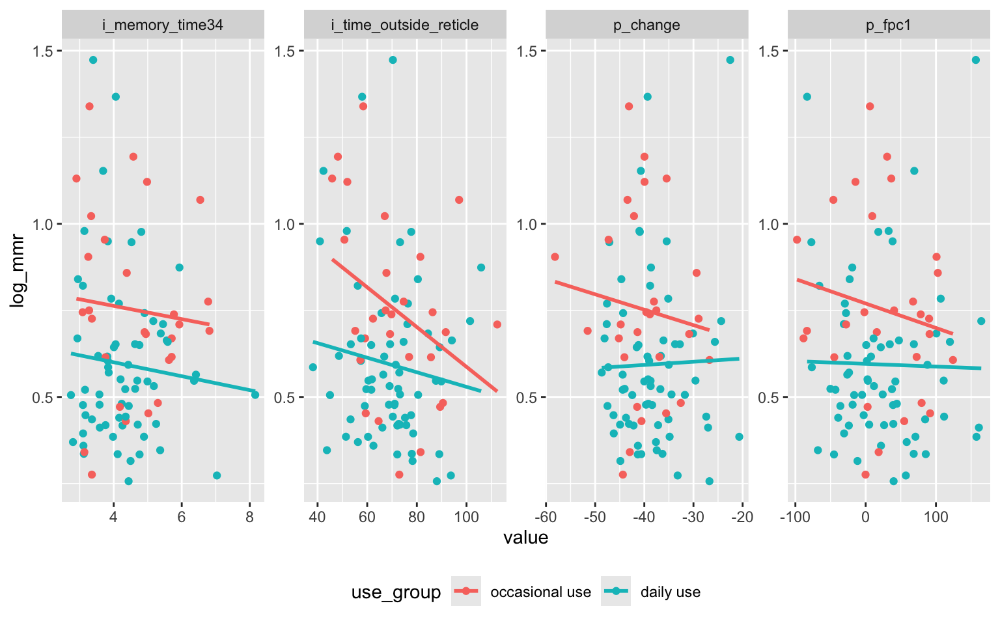
Cannabis data
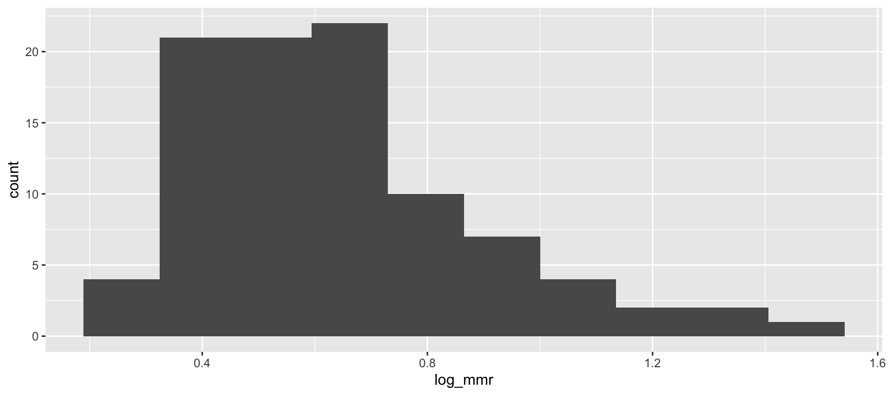
Going to filter out the no-use people for this analysis.
Model specification
\[log(mmr_i) = \beta_0 + \beta_1 \mbox{pupil}_i + \beta_2 \mbox{iPad}_i + \epsilon_i\]
Define the likelihood:
- \(\epsilon \sim N(0, \sigma^2_yI_n) \implies y\sim N(X\beta, \sigma^2_yI_n)\)
Define the priors:
- \(\beta \sim N(0, \sigma^2_{\beta}I_{\beta})\)
- \(\sigma^2_y \sim Exp(\lambda)\)
Define the hyperparameters
- Let \(\sigma^2_{\beta} = 100\)
- Let \(\lambda = 1\)
Fitting the model
We will use the R package rstanarm
blr_mod = stan_glm(log_mmr ~ p_fpc1 + i_time_outside_reticle + use_group,
data = cannabis,
prior_intercept = normal(0, 10),
prior = normal(0, 10),
prior_aux = exponential(rate = 1))
SAMPLING FOR MODEL 'continuous' NOW (CHAIN 1).
Chain 1:
Chain 1: Gradient evaluation took 0.001 seconds
Chain 1: 1000 transitions using 10 leapfrog steps per transition would take 10 seconds.
Chain 1: Adjust your expectations accordingly!
Chain 1:
Chain 1:
Chain 1: Iteration: 1 / 2000 [ 0%] (Warmup)
Chain 1: Iteration: 200 / 2000 [ 10%] (Warmup)
Chain 1: Iteration: 400 / 2000 [ 20%] (Warmup)
Chain 1: Iteration: 600 / 2000 [ 30%] (Warmup)
Chain 1: Iteration: 800 / 2000 [ 40%] (Warmup)
Chain 1: Iteration: 1000 / 2000 [ 50%] (Warmup)
Chain 1: Iteration: 1001 / 2000 [ 50%] (Sampling)
Chain 1: Iteration: 1200 / 2000 [ 60%] (Sampling)
Chain 1: Iteration: 1400 / 2000 [ 70%] (Sampling)
Chain 1: Iteration: 1600 / 2000 [ 80%] (Sampling)
Chain 1: Iteration: 1800 / 2000 [ 90%] (Sampling)
Chain 1: Iteration: 2000 / 2000 [100%] (Sampling)
Chain 1:
Chain 1: Elapsed Time: 1.077 seconds (Warm-up)
Chain 1: 0.615 seconds (Sampling)
Chain 1: 1.692 seconds (Total)
Chain 1:
SAMPLING FOR MODEL 'continuous' NOW (CHAIN 2).
Chain 2:
Chain 2: Gradient evaluation took 7e-06 seconds
Chain 2: 1000 transitions using 10 leapfrog steps per transition would take 0.07 seconds.
Chain 2: Adjust your expectations accordingly!
Chain 2:
Chain 2:
Chain 2: Iteration: 1 / 2000 [ 0%] (Warmup)
Chain 2: Iteration: 200 / 2000 [ 10%] (Warmup)
Chain 2: Iteration: 400 / 2000 [ 20%] (Warmup)
Chain 2: Iteration: 600 / 2000 [ 30%] (Warmup)
Chain 2: Iteration: 800 / 2000 [ 40%] (Warmup)
Chain 2: Iteration: 1000 / 2000 [ 50%] (Warmup)
Chain 2: Iteration: 1001 / 2000 [ 50%] (Sampling)
Chain 2: Iteration: 1200 / 2000 [ 60%] (Sampling)
Chain 2: Iteration: 1400 / 2000 [ 70%] (Sampling)
Chain 2: Iteration: 1600 / 2000 [ 80%] (Sampling)
Chain 2: Iteration: 1800 / 2000 [ 90%] (Sampling)
Chain 2: Iteration: 2000 / 2000 [100%] (Sampling)
Chain 2:
Chain 2: Elapsed Time: 0.964 seconds (Warm-up)
Chain 2: 0.554 seconds (Sampling)
Chain 2: 1.518 seconds (Total)
Chain 2:
SAMPLING FOR MODEL 'continuous' NOW (CHAIN 3).
Chain 3:
Chain 3: Gradient evaluation took 6e-06 seconds
Chain 3: 1000 transitions using 10 leapfrog steps per transition would take 0.06 seconds.
Chain 3: Adjust your expectations accordingly!
Chain 3:
Chain 3:
Chain 3: Iteration: 1 / 2000 [ 0%] (Warmup)
Chain 3: Iteration: 200 / 2000 [ 10%] (Warmup)
Chain 3: Iteration: 400 / 2000 [ 20%] (Warmup)
Chain 3: Iteration: 600 / 2000 [ 30%] (Warmup)
Chain 3: Iteration: 800 / 2000 [ 40%] (Warmup)
Chain 3: Iteration: 1000 / 2000 [ 50%] (Warmup)
Chain 3: Iteration: 1001 / 2000 [ 50%] (Sampling)
Chain 3: Iteration: 1200 / 2000 [ 60%] (Sampling)
Chain 3: Iteration: 1400 / 2000 [ 70%] (Sampling)
Chain 3: Iteration: 1600 / 2000 [ 80%] (Sampling)
Chain 3: Iteration: 1800 / 2000 [ 90%] (Sampling)
Chain 3: Iteration: 2000 / 2000 [100%] (Sampling)
Chain 3:
Chain 3: Elapsed Time: 1.089 seconds (Warm-up)
Chain 3: 0.477 seconds (Sampling)
Chain 3: 1.566 seconds (Total)
Chain 3:
SAMPLING FOR MODEL 'continuous' NOW (CHAIN 4).
Chain 4:
Chain 4: Gradient evaluation took 8e-06 seconds
Chain 4: 1000 transitions using 10 leapfrog steps per transition would take 0.08 seconds.
Chain 4: Adjust your expectations accordingly!
Chain 4:
Chain 4:
Chain 4: Iteration: 1 / 2000 [ 0%] (Warmup)
Chain 4: Iteration: 200 / 2000 [ 10%] (Warmup)
Chain 4: Iteration: 400 / 2000 [ 20%] (Warmup)
Chain 4: Iteration: 600 / 2000 [ 30%] (Warmup)
Chain 4: Iteration: 800 / 2000 [ 40%] (Warmup)
Chain 4: Iteration: 1000 / 2000 [ 50%] (Warmup)
Chain 4: Iteration: 1001 / 2000 [ 50%] (Sampling)
Chain 4: Iteration: 1200 / 2000 [ 60%] (Sampling)
Chain 4: Iteration: 1400 / 2000 [ 70%] (Sampling)
Chain 4: Iteration: 1600 / 2000 [ 80%] (Sampling)
Chain 4: Iteration: 1800 / 2000 [ 90%] (Sampling)
Chain 4: Iteration: 2000 / 2000 [100%] (Sampling)
Chain 4:
Chain 4: Elapsed Time: 0.906 seconds (Warm-up)
Chain 4: 0.567 seconds (Sampling)
Chain 4: 1.473 seconds (Total)
Chain 4: Model summary
summary(blr_mod)
Model Info:
function: stan_glm
family: gaussian [identity]
formula: log_mmr ~ p_fpc1 + i_time_outside_reticle + use_group
algorithm: sampling
sample: 4000 (posterior sample size)
priors: see help('prior_summary')
observations: 94
predictors: 4
Estimates:
mean sd 10% 50% 90%
(Intercept) 1.0 0.1 0.8 1.0 1.2
p_fpc1 0.0 0.0 0.0 0.0 0.0
i_time_outside_reticle 0.0 0.0 0.0 0.0 0.0
use_groupdaily use -0.2 0.1 -0.2 -0.2 -0.1
sigma 0.2 0.0 0.2 0.2 0.3
Fit Diagnostics:
mean sd 10% 50% 90%
mean_PPD 0.6 0.0 0.6 0.6 0.7
The mean_ppd is the sample average posterior predictive distribution of the outcome variable (for details see help('summary.stanreg')).
MCMC diagnostics
mcse Rhat n_eff
(Intercept) 0.0 1.0 3109
p_fpc1 0.0 1.0 4726
i_time_outside_reticle 0.0 1.0 3601
use_groupdaily use 0.0 1.0 1834
sigma 0.0 1.0 1638
mean_PPD 0.0 1.0 2481
log-posterior 0.0 1.0 1269
For each parameter, mcse is Monte Carlo standard error, n_eff is a crude measure of effective sample size, and Rhat is the potential scale reduction factor on split chains (at convergence Rhat=1).Fitting the model- diffuse-r priors
This fitting was substantially slower than the previous model.
blr_mod2 = stan_glm(log_mmr ~ p_fpc1 + i_time_outside_reticle + use_group,
data = cannabis,
prior_intercept = normal(0, 1000),
prior = normal(0, 1000),
prior_aux = exponential(rate = 1))
SAMPLING FOR MODEL 'continuous' NOW (CHAIN 1).
Chain 1:
Chain 1: Gradient evaluation took 1.6e-05 seconds
Chain 1: 1000 transitions using 10 leapfrog steps per transition would take 0.16 seconds.
Chain 1: Adjust your expectations accordingly!
Chain 1:
Chain 1:
Chain 1: Iteration: 1 / 2000 [ 0%] (Warmup)
Chain 1: Iteration: 200 / 2000 [ 10%] (Warmup)
Chain 1: Iteration: 400 / 2000 [ 20%] (Warmup)
Chain 1: Iteration: 600 / 2000 [ 30%] (Warmup)
Chain 1: Iteration: 800 / 2000 [ 40%] (Warmup)
Chain 1: Iteration: 1000 / 2000 [ 50%] (Warmup)
Chain 1: Iteration: 1001 / 2000 [ 50%] (Sampling)
Chain 1: Iteration: 1200 / 2000 [ 60%] (Sampling)
Chain 1: Iteration: 1400 / 2000 [ 70%] (Sampling)
Chain 1: Iteration: 1600 / 2000 [ 80%] (Sampling)
Chain 1: Iteration: 1800 / 2000 [ 90%] (Sampling)
Chain 1: Iteration: 2000 / 2000 [100%] (Sampling)
Chain 1:
Chain 1: Elapsed Time: 6.959 seconds (Warm-up)
Chain 1: 20.706 seconds (Sampling)
Chain 1: 27.665 seconds (Total)
Chain 1:
SAMPLING FOR MODEL 'continuous' NOW (CHAIN 2).
Chain 2:
Chain 2: Gradient evaluation took 1e-05 seconds
Chain 2: 1000 transitions using 10 leapfrog steps per transition would take 0.1 seconds.
Chain 2: Adjust your expectations accordingly!
Chain 2:
Chain 2:
Chain 2: Iteration: 1 / 2000 [ 0%] (Warmup)
Chain 2: Iteration: 200 / 2000 [ 10%] (Warmup)
Chain 2: Iteration: 400 / 2000 [ 20%] (Warmup)
Chain 2: Iteration: 600 / 2000 [ 30%] (Warmup)
Chain 2: Iteration: 800 / 2000 [ 40%] (Warmup)
Chain 2: Iteration: 1000 / 2000 [ 50%] (Warmup)
Chain 2: Iteration: 1001 / 2000 [ 50%] (Sampling)
Chain 2: Iteration: 1200 / 2000 [ 60%] (Sampling)
Chain 2: Iteration: 1400 / 2000 [ 70%] (Sampling)
Chain 2: Iteration: 1600 / 2000 [ 80%] (Sampling)
Chain 2: Iteration: 1800 / 2000 [ 90%] (Sampling)
Chain 2: Iteration: 2000 / 2000 [100%] (Sampling)
Chain 2:
Chain 2: Elapsed Time: 3.864 seconds (Warm-up)
Chain 2: 13.603 seconds (Sampling)
Chain 2: 17.467 seconds (Total)
Chain 2:
SAMPLING FOR MODEL 'continuous' NOW (CHAIN 3).
Chain 3:
Chain 3: Gradient evaluation took 6e-06 seconds
Chain 3: 1000 transitions using 10 leapfrog steps per transition would take 0.06 seconds.
Chain 3: Adjust your expectations accordingly!
Chain 3:
Chain 3:
Chain 3: Iteration: 1 / 2000 [ 0%] (Warmup)
Chain 3: Iteration: 200 / 2000 [ 10%] (Warmup)
Chain 3: Iteration: 400 / 2000 [ 20%] (Warmup)
Chain 3: Iteration: 600 / 2000 [ 30%] (Warmup)
Chain 3: Iteration: 800 / 2000 [ 40%] (Warmup)
Chain 3: Iteration: 1000 / 2000 [ 50%] (Warmup)
Chain 3: Iteration: 1001 / 2000 [ 50%] (Sampling)
Chain 3: Iteration: 1200 / 2000 [ 60%] (Sampling)
Chain 3: Iteration: 1400 / 2000 [ 70%] (Sampling)
Chain 3: Iteration: 1600 / 2000 [ 80%] (Sampling)
Chain 3: Iteration: 1800 / 2000 [ 90%] (Sampling)
Chain 3: Iteration: 2000 / 2000 [100%] (Sampling)
Chain 3:
Chain 3: Elapsed Time: 24.436 seconds (Warm-up)
Chain 3: 28.079 seconds (Sampling)
Chain 3: 52.515 seconds (Total)
Chain 3:
SAMPLING FOR MODEL 'continuous' NOW (CHAIN 4).
Chain 4:
Chain 4: Gradient evaluation took 6e-06 seconds
Chain 4: 1000 transitions using 10 leapfrog steps per transition would take 0.06 seconds.
Chain 4: Adjust your expectations accordingly!
Chain 4:
Chain 4:
Chain 4: Iteration: 1 / 2000 [ 0%] (Warmup)
Chain 4: Iteration: 200 / 2000 [ 10%] (Warmup)
Chain 4: Iteration: 400 / 2000 [ 20%] (Warmup)
Chain 4: Iteration: 600 / 2000 [ 30%] (Warmup)
Chain 4: Iteration: 800 / 2000 [ 40%] (Warmup)
Chain 4: Iteration: 1000 / 2000 [ 50%] (Warmup)
Chain 4: Iteration: 1001 / 2000 [ 50%] (Sampling)
Chain 4: Iteration: 1200 / 2000 [ 60%] (Sampling)
Chain 4: Iteration: 1400 / 2000 [ 70%] (Sampling)
Chain 4: Iteration: 1600 / 2000 [ 80%] (Sampling)
Chain 4: Iteration: 1800 / 2000 [ 90%] (Sampling)
Chain 4: Iteration: 2000 / 2000 [100%] (Sampling)
Chain 4:
Chain 4: Elapsed Time: 7.664 seconds (Warm-up)
Chain 4: 30.666 seconds (Sampling)
Chain 4: 38.33 seconds (Total)
Chain 4: Model summary
summary(blr_mod2)
Model Info:
function: stan_glm
family: gaussian [identity]
formula: log_mmr ~ p_fpc1 + i_time_outside_reticle + use_group
algorithm: sampling
sample: 4000 (posterior sample size)
priors: see help('prior_summary')
observations: 94
predictors: 4
Estimates:
mean sd 10% 50% 90%
(Intercept) 1.0 0.1 0.8 1.0 1.2
p_fpc1 0.0 0.0 0.0 0.0 0.0
i_time_outside_reticle 0.0 0.0 0.0 0.0 0.0
use_groupdaily use -0.2 0.1 -0.2 -0.2 -0.1
sigma 0.2 0.0 0.2 0.2 0.3
Fit Diagnostics:
mean sd 10% 50% 90%
mean_PPD 0.6 0.0 0.6 0.6 0.7
The mean_ppd is the sample average posterior predictive distribution of the outcome variable (for details see help('summary.stanreg')).
MCMC diagnostics
mcse Rhat n_eff
(Intercept) 0.0 1.0 3395
p_fpc1 0.0 1.0 3713
i_time_outside_reticle 0.0 1.0 3820
use_groupdaily use 0.0 1.0 2207
sigma 0.0 1.0 838
mean_PPD 0.0 1.0 1315
log-posterior 0.1 1.0 757
For each parameter, mcse is Monte Carlo standard error, n_eff is a crude measure of effective sample size, and Rhat is the potential scale reduction factor on split chains (at convergence Rhat=1).OLS
##### compare with least squares
mod_lm = lm(log_mmr ~ p_fpc1 + i_time_outside_reticle + use_group, data = cannabis)
summary(mod_lm)
Call:
lm(formula = log_mmr ~ p_fpc1 + i_time_outside_reticle + use_group,
data = cannabis)
Residuals:
Min 1Q Median 3Q Max
-0.47538 -0.16440 -0.05425 0.12442 0.90746
Coefficients:
Estimate Std. Error t value Pr(>|t|)
(Intercept) 0.9921595 0.1298175 7.643 2.21e-11 ***
p_fpc1 -0.0001831 0.0004189 -0.437 0.66300
i_time_outside_reticle -0.0033046 0.0017121 -1.930 0.05673 .
use_groupdaily use -0.1651633 0.0551611 -2.994 0.00355 **
---
Signif. codes: 0 '***' 0.001 '**' 0.01 '*' 0.05 '.' 0.1 ' ' 1
Residual standard error: 0.2441 on 90 degrees of freedom
Multiple R-squared: 0.121, Adjusted R-squared: 0.09173
F-statistic: 4.131 on 3 and 90 DF, p-value: 0.008587Regression coefficients
| term | estimate | std.error | conf.low | conf.high | model |
|---|---|---|---|---|---|
| (Intercept) | 0.9856 | 0.1291 | 0.7801 | 1.2099 | blr |
| (Intercept) | 0.9922 | 0.1298 | 0.7343 | 1.2501 | lm |
| (Intercept) | 0.9942 | 0.1326 | 0.7779 | 1.2141 | blr_diffuse |
| i_time_outside_reticle | -0.0032 | 0.0017 | -0.0061 | -0.0005 | blr |
| i_time_outside_reticle | -0.0033 | 0.0017 | -0.0067 | 0.0001 | lm |
| i_time_outside_reticle | -0.0033 | 0.0018 | -0.0062 | -0.0004 | blr_diffuse |
| p_fpc1 | -0.0002 | 0.0004 | -0.0008 | 0.0005 | blr |
| p_fpc1 | -0.0002 | 0.0004 | -0.0010 | 0.0006 | lm |
| p_fpc1 | -0.0002 | 0.0004 | -0.0009 | 0.0005 | blr_diffuse |
| use_groupdaily use | -0.1645 | 0.0555 | -0.2578 | -0.0743 | blr |
| use_groupdaily use | -0.1652 | 0.0552 | -0.2748 | -0.0556 | lm |
| use_groupdaily use | -0.1649 | 0.0569 | -0.2616 | -0.0740 | blr_diffuse |
Bayesian regression diagnostics
The package rstanarm uses MCMC to draw samples from the posterior distribution. There are standard checks to ensure that your results come from independent draws of the posterior distribution.
- We will come back to these after we talk more about MCMC
stan_glmhas lots of nice tutorials